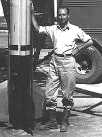
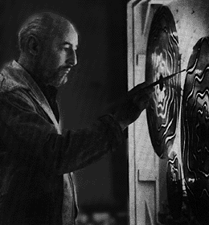

Frank J. Malina 1912-1981

Dr. Frank J. Malina served as the second director of the Jet Propulsion Laboratory, from 1944 to 1946.
This photo was taken in 1944.Frank Malina, founder of Leonardo, was an American scientist. After receiving his Ph.D from the California Institute of Technology in 1936, Malina directed the WAC Corporal program that put thefirst rocket beyond the Earth's atmosphere. He co-founded and was the second director of the Jet Propulsion Laboratory (JPL), co-founded the Aerojet General Corporation and was an activeparticipant in rocket-science development in the period leading up to and during World War II.

Frank J. Malina in 1961 working on his Lumidyne kinetic painting 'Nebulae II. (photo P.Almasy)Invited to join the United Nations Education, Science and Culture Organization (UNESCO) in1947 by Julian Huxley, Malina moved to Paris as the director of the organization's science programs. The separation between science and the humanities was the subject of intense debateduring the post-war period, particularly after the publication of C.P. Snow's Two Cultures in 1959. The concept that there was and should be a natural relationship between science and art fascinated Malina, eventually influencing him to synthesize his scientific experience with hislong-standing artistic sensibilities. As an artist, Malina moved from traditional media to mesh,string and canvas constructions and finally to experiments with light, which led to his developmentof systems for kinetic painting.
In his work as a scientist and engineer, Malina had access to an abundance of scholarly periodicalsthat enabled peers in any given field to stay abreast of each other's work and to monitor importantnews developments. There was no equivalent publication for artists, so he decided to start one. The concept was simple---a publication by serious artists with subject integrity secured by the samekind of peer review of articles that is common in scientific journals. Malina felt that the demystification of modern art could, in part, be accomplished by the free exchange of information regarding artistic disciplines.
The Leonardo Legacy
Following Frank Malina's death in 1981, Leonardo was moved to California by his son Roger F.Malina, an astronomer at the University of California at Berkeley. With the support of foundingboard members Frank Oppenheimer and Robert Maxwell, the International Society for the Arts,Sciences and Technology (Leonardo/ISAST) was formed in 1982. Leonardo/ISAST was created toaddress the rapidly expanding needs of the art, science and technology community---byparticipation in conferences, symposia, festivals and awards programs, in addition to providingsupport for the journal Leonardo. In 1991, the publication grew from a quarterly to a bimonthlyjournal and spawned a companion volume, the Leonardo Music Journal, dedicated to music and thesound arts and published with an audio compact disc (CD).
Last Updated on 22/7/98
This page is maintained by Chris Jennings